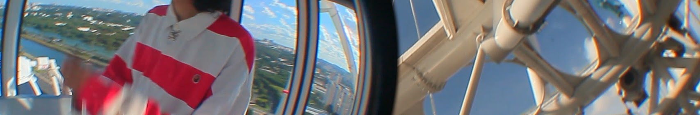

Ele sabe cantar, gosta de Pokémon e vive em São Paulo. Suas músicas falam principalmente sobre superação e ascensão.
E eu cheguei no mundo inteiro
Mas gravei tudo num quarto
Procurando a vida inteira
Mas não achei nem um quarto
Um oitavo e um décimo
E eu odeio essa rotina
Isso é tão chato
Tô fazendo olhos brilharem
Mas tá cheio de olho gordo por perto
Isso é péssimo